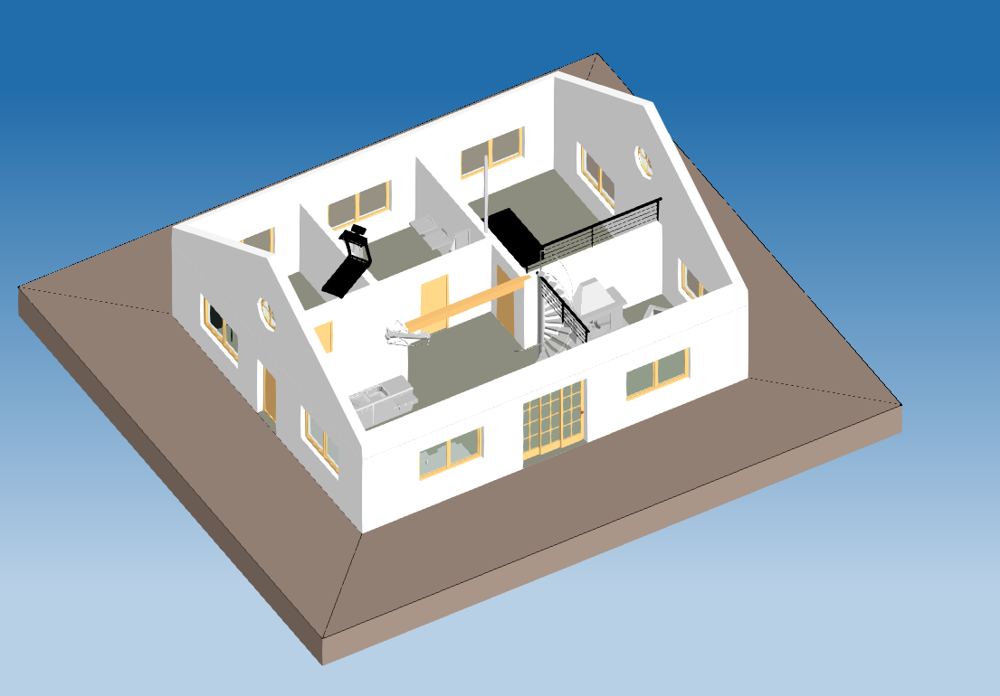
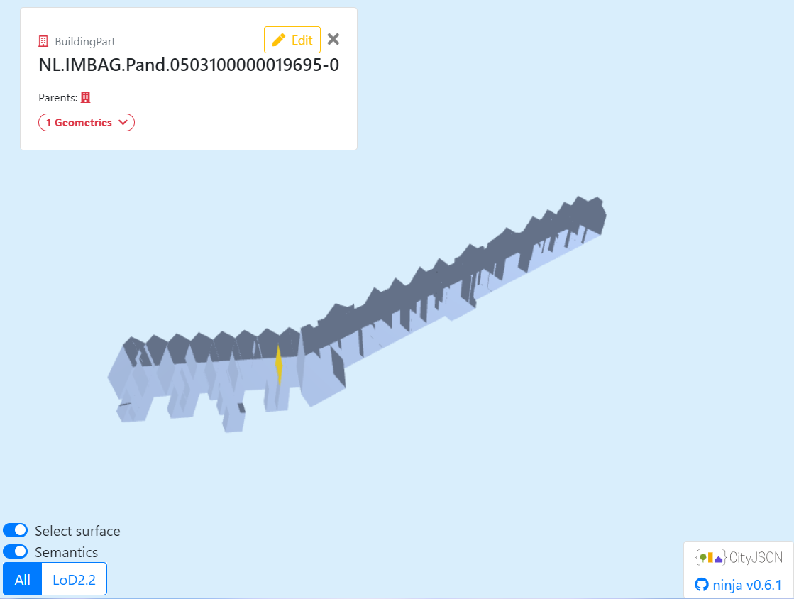
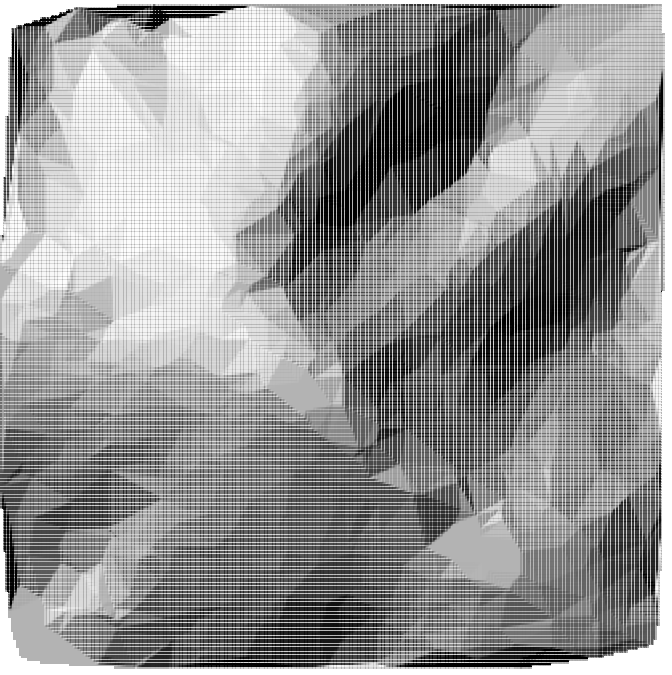
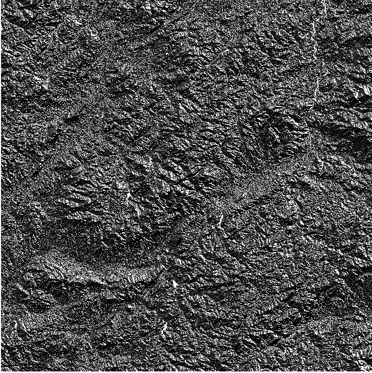
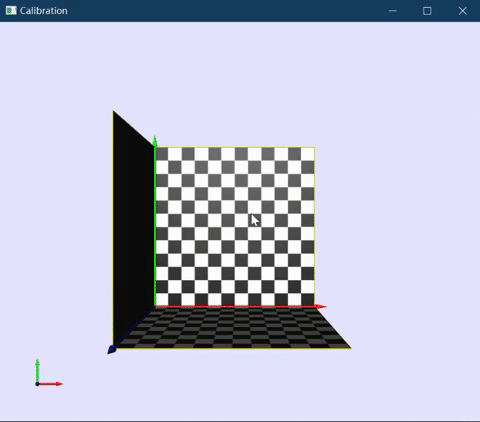
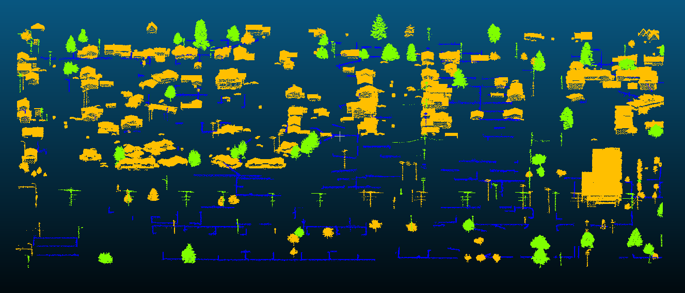
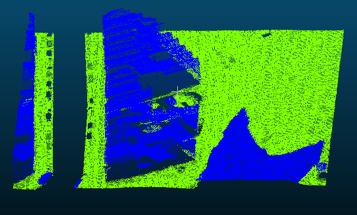
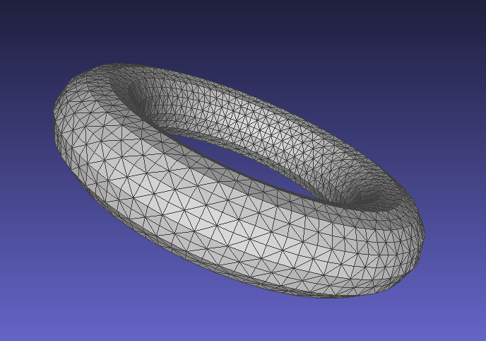
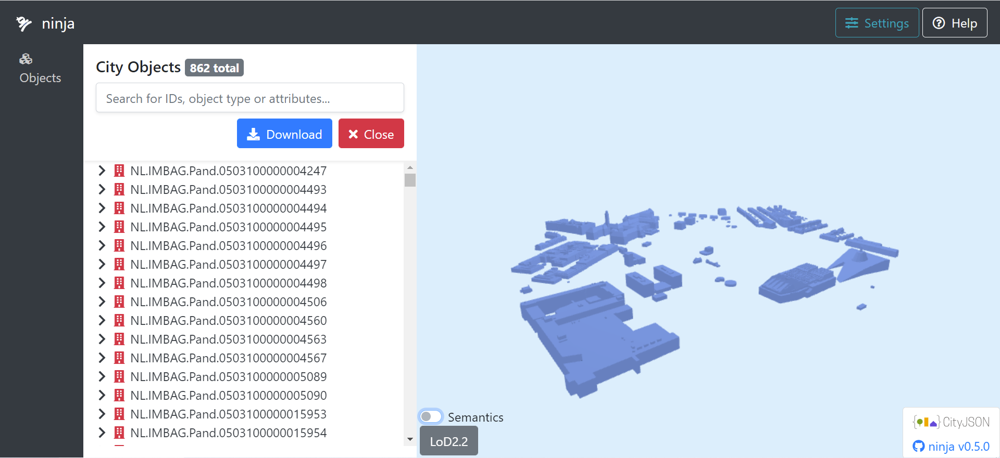

Main Projects
Projects primarily developed during the first year of my MSc studies.
BIMConvertToGeo
Convert a building information modeling (BIM) model, specifically an industry foundation classes (IFC) file, into a CityJSON file.
geoCFD
Preprocess the geometry for CFD simulation - remove internal faces between adjacent buildings. This is developed as the Nef Polyhedra method for the MSc Geomatics Synthesis Project facesBgone.
Reconstruct 3D Geometry

3D geometry reconstruction from a set of images based on the open-source project - Easy3D.
Spatial interpolation
Implementation of Nearest Neighbor (NN) / Inverse Distance Weighting (IDW) / Triangulated Irregular Network (TIN) and Laplace interpolation.
LCP Runoff modeling
Implementation of the least cost path algorithm (LCP) for calculating flow direction and flow accumulation.
Camera Calibration
Implementation of performing camera calibration algorithm based on the open-source project - Easy3D.
Kmeans clustering
Implementation of K-means clustering classification based on the point cloud data.
Ground Filtering
Implementation of Cloth Simulation Filter algorithm (also with verlet integration) based on the point cloud data.
Generalized Map
A possible implementation of generalized map. Take .obj file as input and export the triangulated file using generalized map.
CityJSON
Implementation of calculating building volumes, number of building floors, area, and orientation of roof surfaces based on CityJSON files.